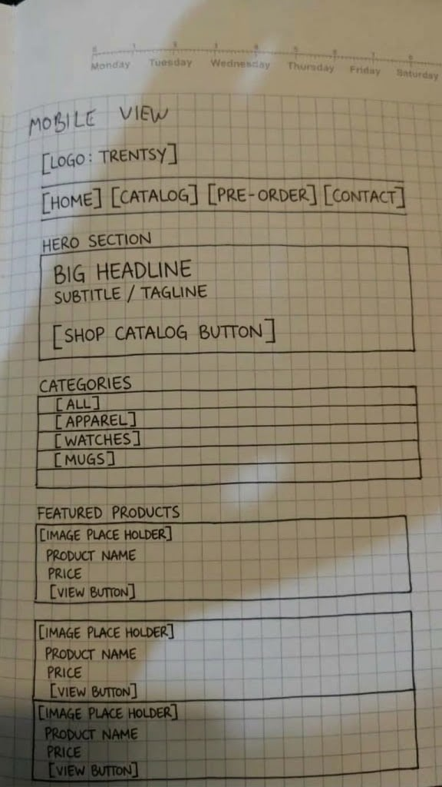
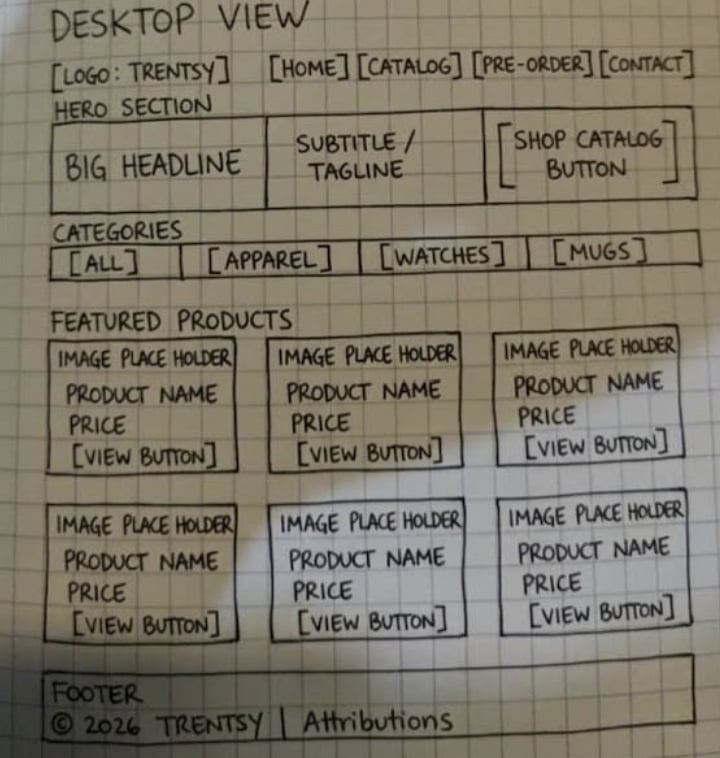

1. Site Name
Trentsy
The name blends “trend” with a soft, boutique-style “-sy” ending, so it reads like a brand you'd see on a clothing tag rather than a generic shop name. It already carries over from the client's existing logo and social media handles, which keeps the branding consistent across every channel instead of introducing a second name to track.
2. Site Purpose
Trentsy is a digital catalog for a small fashion and lifestyle business. The site showcases curated thrifted apparel, vintage-inspired fashion watches, and unique designer mugs/lifestyle items, pulling product details dynamically from a JSON file so the catalog is easy to update without touching code. A contact and pre-order page lets visitors submit custom requests or order inquiries, and a confirmation page echoes their submission back to them.
3. Scenarios
Questions a target visitor (a woman 16+ looking for curated apparel, accessories, and gifts) might ask when arriving on the site:
- What thrifted clothing or accessory items are currently in stock and available to order?
- How do I submit a custom pre-order request for an item I saw on Instagram or TikTok?
- Can I filter the catalog by category, such as watches or mugs, to find what I want faster?
4. Color Scheme
This plan document itself is styled with Trentsy's selected palette, carried over from the project's existing logo and social pages.
Primary Teal#2f6063
Nav bar, buttons, links, section
accents
Dark Teal#1f4244
Headings, hover states, footer
background
Soft Cream#faf8f5
Page background
Card White#ffffff
Content cards and form backgrounds
Accent Gold#d4af37
Badges, borders, small decorative
accents
Text Dark#2c3e50
Body copy
5. Typography
Headings — Cormorant Garamond (serif)
Curated thrift apparel, elegant timepieces.
Body, navigation & buttons — Montserrat (sans-serif)
Product names, descriptions, form labels, and navigation links use Montserrat for clean, highly legible text at small sizes.
6. Wireframe
Hand-drawn, black-and-white sketches of the home page layout at small (mobile) and large (desktop/tablet) viewport widths.
Replace the two images below with photos/scans of your own hand-drawn wireframes before submitting — these are placeholders only.

